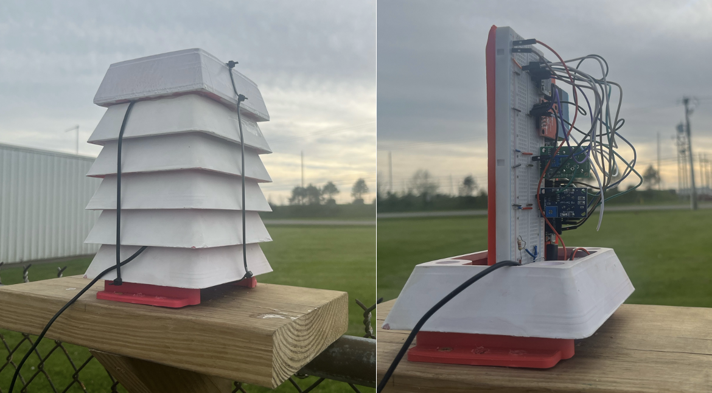
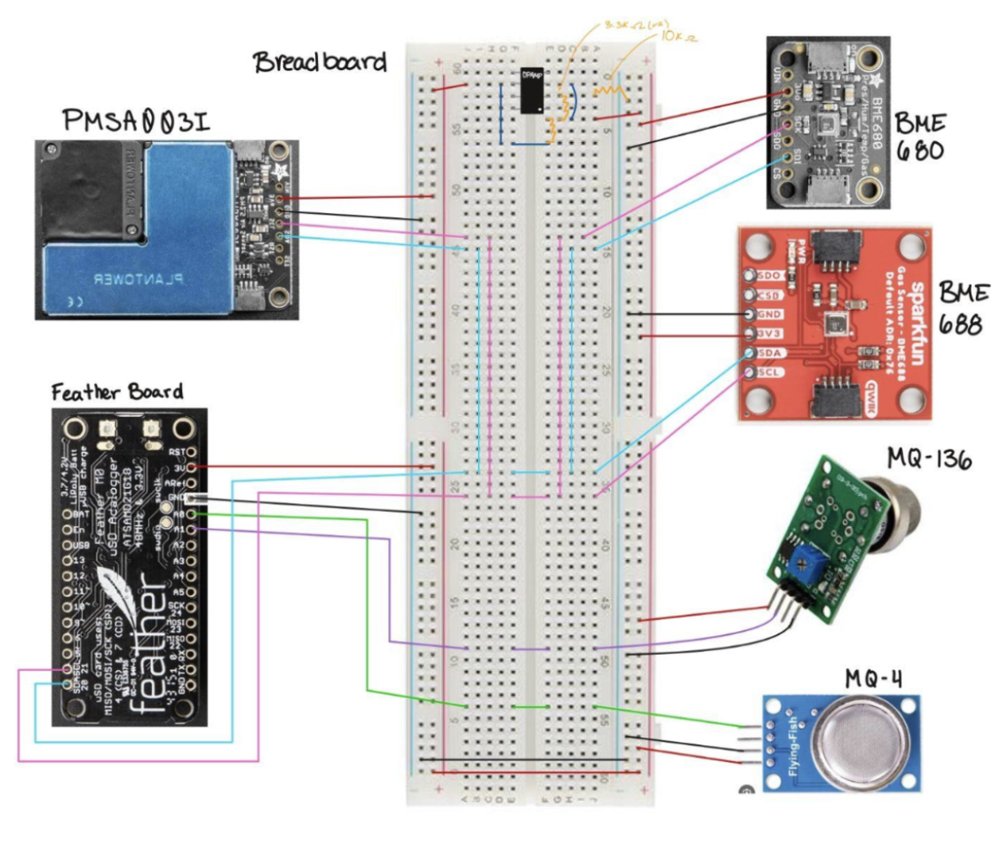
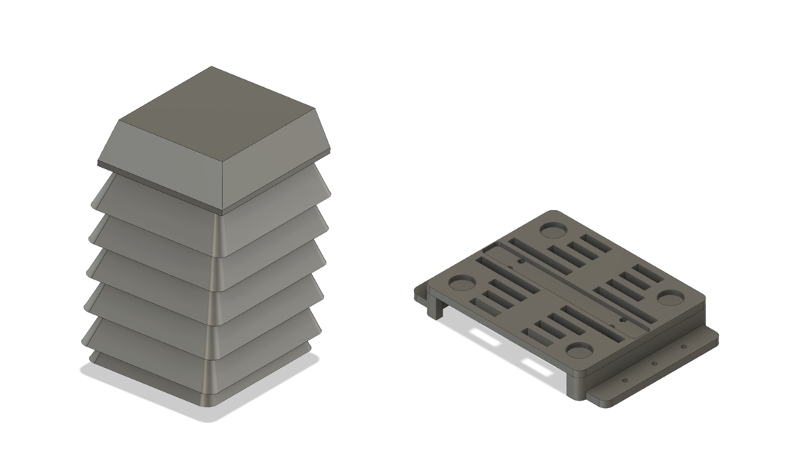

The Air Quality Sensor for Seneca Meadows Landfill was my design project in MAE 4220: Internet of Things. The Seneca Meadows Landfill is the largest landfill in New York State and has interfered with the locals’ right to clean air and a healthy living environment. We worked in collaboration with BluePrint Geneva, a nonprofit organization, to build an air sensor that would detect methane, hydrogen sulfide, PM, and VOC levels in conjunction with environmental conditions and send this data to The Things Network to ensure real-time data transmission. This project allowed for the community to have data on the air pollutant levels to advocate for a healthier living environment.
I collaborated with a team of four to create an easily reproducible air sensor for BluePrint Geneva to mount across the community. We also successfully mounted our first prototype in Waterloo (south of the landfill and downstream of the wind)! We also pitched our design in the Cornell uSpark Living Labs pitch competition, placing 5th and receiving a monetary prize for our work.
 This was the final sensor that was mounted!Our partnership with BluePrint Geneva was one of the most important parts of our project. We held weekly meetings with our community partner to update her frequently on our progress and ask questions about how to move forward.
Understanding the core of the problem was one of the most important factors of our project, as it allowed us to better understand what data we needed to collect and what the end-product of our project would look like. We needed to design a solution that verified the feelings of the community members about the odor produced from the landfill.
We also created a partnership with Waterloo Container, a company based right next to the landfill. Waterloo Container, an opposer of the landfill’s growth and a victim to the reduced air quality caused by the landfill, was willing to host our first prototype and provide us with the necessary power to run our module.
 Here was us at Waterloo Container after mounting!
Here was us at Waterloo Container after mounting!
One of the main obstacles we faced was understanding which sensors would be the most helpful in confirming the odor and reduced air quality produced from the landfill. We researched the chemical compounds that contributed to the odors and collaborated with our community partner to determine which compounds we should use sensors for. Once we figured out what we wanted sensors for, the next step was to identify and purchase sensors that were reliable, able to be used outdoor, and relatively inexpensive.
Our team utilized the PMSA003I sensor to detect the PM levels, the BME680 and BME688 sensors to determine environmental conditions, the MQ-4 sensor to determine methane levels, and the SRAQG018 sensor to detect hydrogen sulfide levels. I was responsible for the wiring of the system. We connected the system to an MCCI Catena 4410 Featherboard, which allowed for easier data transmission to the network. However, the required voltage of a few sensors were higher than the voltage that the Featherboard was able to provide, so I opted to use an op-amp and 9V battery to amplify the voltage.
 This was the wiring schematic we developed for our sensor.Our team utilized a 3D-printed Stevenson screen to house our sensor. For ease of replication and building, we created modules that fit into each other like Legos. The Stevenson screen was created to shield our model from environmental conditions like snow and water but still allow for wind to enter for the sensors to read. We also created a bottom mount that allowed for the system to be screwed into a wood panel.
 Modular housing (right) and the bottom plate mounting pad (left)One of my main responsibilities was writing the code and initiating the data transmission to the LoRaWAN network. In conjunction with one other team member, we wrote the code in C that received the data from the sensors and sent them in packets to the LoRaWAN network. We sent data once every ten minutes. Furthermore, we also wrote code on The Things Network that allowed the system to decode the packets it was receiving into tangible numbers. Our final code was using Python to collect the data from TTN into a text file that could eventually be run in a software to plot points and get data.
Our team's final report can be found here: